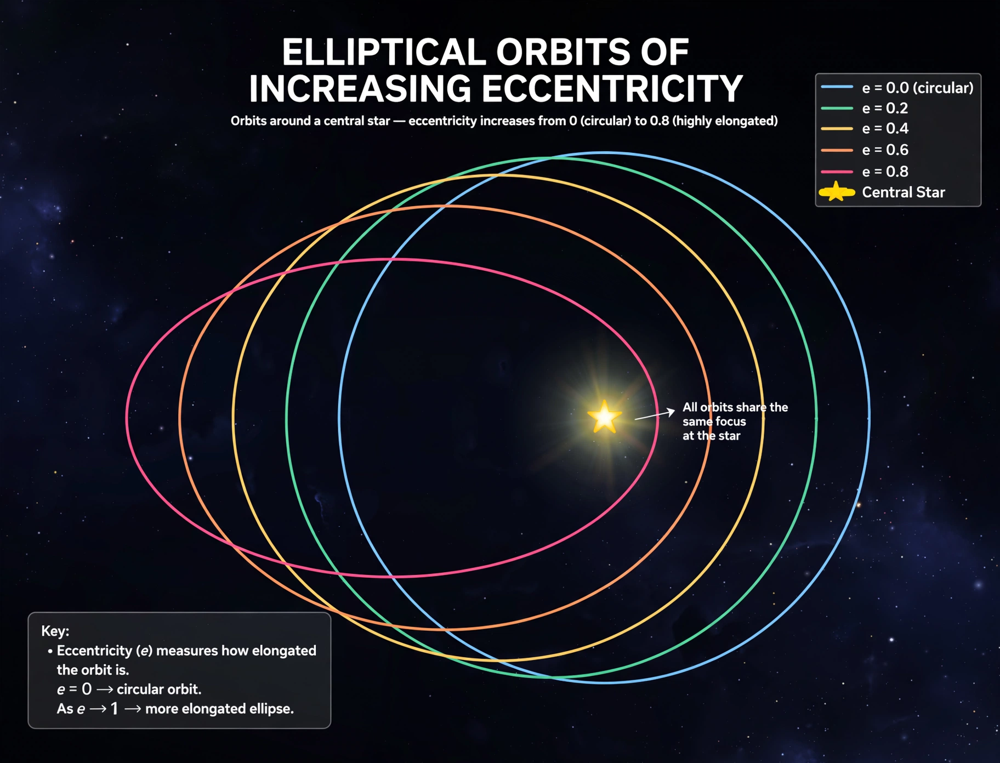

In astrodynamics, the orbital eccentricity of an astronomical object is a dimensionless parameter that determines how much its orbit around another body deviates from a perfect circle. A value of 0 is a circular orbit, values between 0 and 1 form an elliptical orbit, 1 is a parabolic escape orbit, and values greater than 1 form a hyperbola.
For an elliptical orbit with semi-major axis a and semi-minor axis b, the eccentricity is e = √(1 − b²/a²). Equivalently, e = (ra − rp) / (ra + rp), where ra is the apoapsis distance and rp the periapsis distance. The term derives from the eccentricity of conic sections, of which Keplerian orbits are examples.
Earth's orbit has an eccentricity of about 0.0167, so it is nearly circular. Mercury has the most eccentric orbit of the eight planets, at 0.2056, while Venus (0.0068) and Neptune (0.0086) have the least. Halley's Comet has an eccentricity of about 0.967, and interstellar visitors such as ʻOumuamua followed hyperbolic trajectories with eccentricity above 1. The Moon's orbit around Earth has an eccentricity of roughly 0.055.
Eccentricity affects the variation of orbital speed (a body moves fastest at periapsis, per Kepler's second law) and the seasonal distribution of sunlight on a planet. Changes in Earth's eccentricity over cycles of roughly 100,000 and 405,000 years form part of the Milankovitch cycles implicated in the timing of ice ages. Highly eccentric exoplanets are common among those detected by radial-velocity surveys.